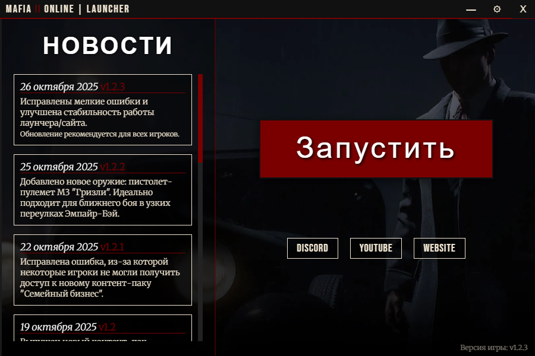

Как начать играть
Добро пожаловать в семью. Чтобы присоединиться к нам в Эмпайр-Бэй, вам нужно выполнить несколько простых шагов:
- Скачайте наш эксклюзивный лаунчер. Он необходим для входа в игру и получения обновлений.
- Установите лаунчер и запустите его.
- Лаунчер автоматически проверит наличие игры. Если игра не найдена, он предложит вам скачать ее или указать путь к уже установленной копии.
- После установки нажмите "Запустить" и наслаждайтесь игрой!
(Примечание: Если загрузка не начнется автоматически, нажмите на эту ссылку вручную.)